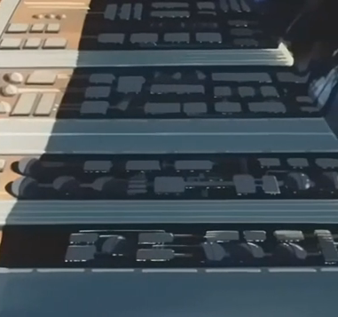

|
Moon, Near Side Urban Sealed Fortification Ayers is not shaped like most lunar cities, rather than being built into a crater it is built into the side of a great cliff. Smaller and more compact than most cities, its citizens live more or less in peace with their surroundings, having been saved the cruelty of warfare to a far greater degree than most of the Earth Sphere. Ayers City  |